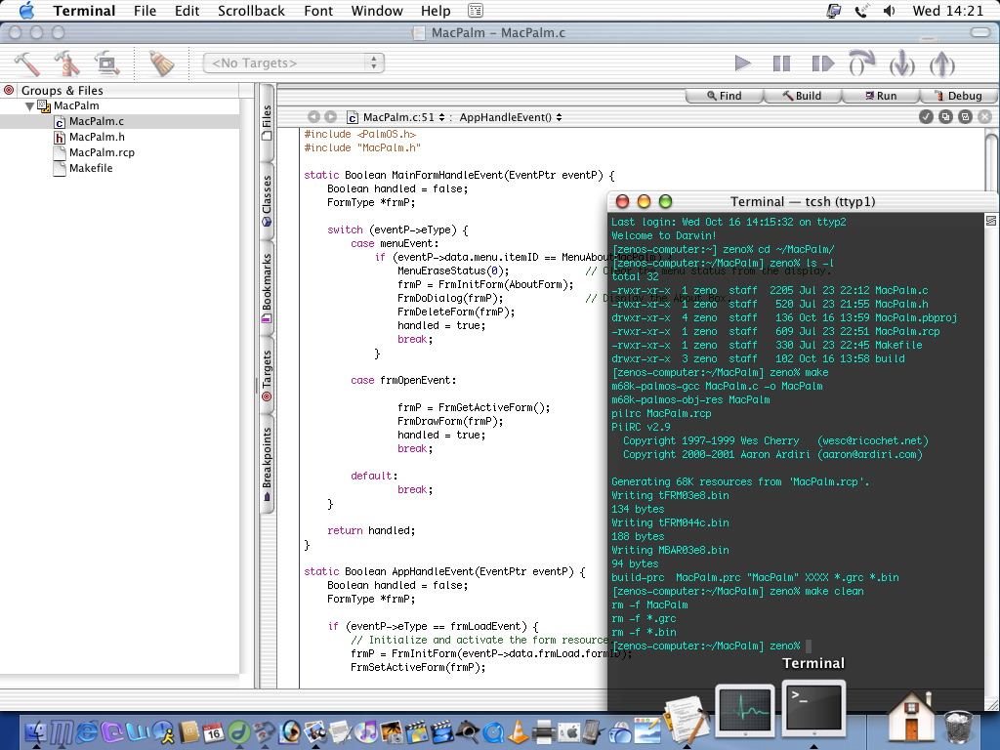

Monospace fonts
I finally got fed up enough with Courier New to start searching for a legible, monospace font to use in jEdit. In Emacs, I'm particularly fond of the standard X font "misc-fixed" (though it's a little tough to tell appart O and 0 still). But for jEdit, the Java monospace font seems to map to Courier New in Windows, and to some God-awful font on Linux.
Playing with my neighbours Macintosh, I quite like the fonts you can see in the Terminal program and in Xcode:

Mac hacking screenshot (not mine)
{kind=link}
I wish Windows and Linux had nice fonts too. Well, my wish is granted. Thanks to this great site, which reviews monospace fonts from a programmer's point of view, I've found three fonts I just love, and (no surprise), two of them come from Apple and are freely available.
I agree with the review. The best all-round monospace font is definitely Bitstream's Vera Sans Mono. It's clear, and uncluttered with good distinction between the similar characters 1 i l | and o O 0. Importantly, the font width doesn't change with different weights, so if your syntax highlighter makes some keywords bold or slanted, they are still the same width as the normal words, meaning that the alignment doesn't break in jEdit.
I really love Anonymous though. As it's home page describes it, this is based on Apple's Anonymous 9 font, which itself was a re-working of Monaco, the system font for the Macintosh. Anonymous is highly legible, even more than Vera Sans. I really love the zeros, they look like a backwards Ø character. Also though it's a san-serif font, the i and l characters have serifs cleverly placed to distinguish from the 1 and | characters . The only problem I've found with it, is that the bold characters are ever so slightly wider than the normal characters, so in syntax highlighting, the alignment gets slightly skewed.
The Monaco font, which is the basis for Anonymous, is also pretty nice but has the same issue with the font weights. It's interesting to compare the two and see what was changed. The zero is a more traditional slashed 0 (sort of like Ø) and some of the round shapes are different.
Here's a shot of my jEdit using Vera Sans Mono:
{kind=link}
Since that's rather small, here's a close-up:
{kind=link}